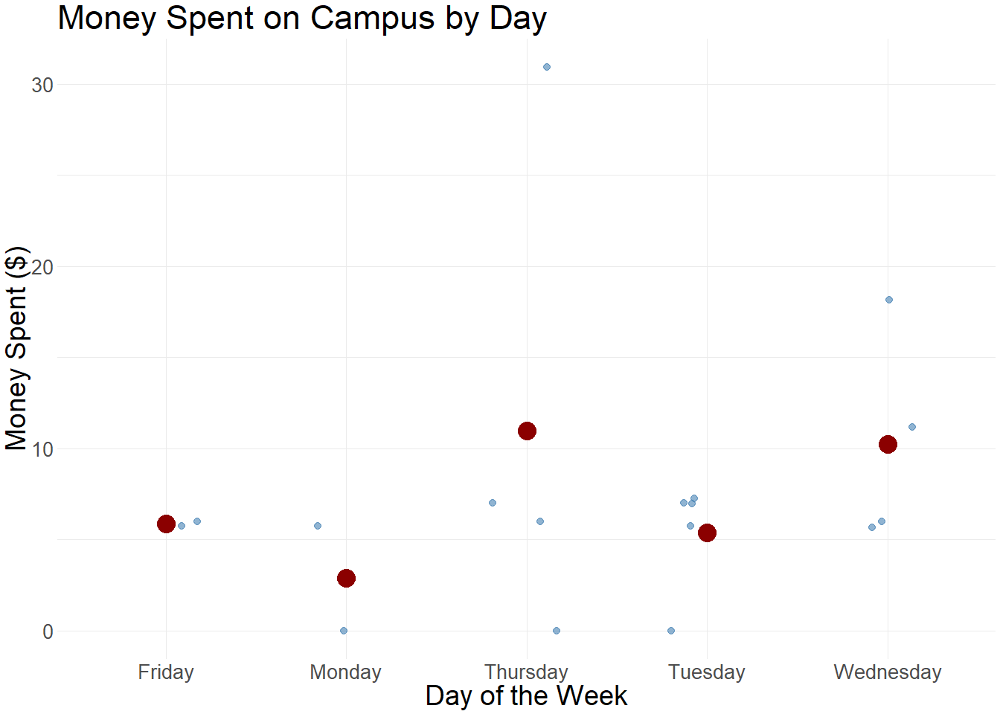
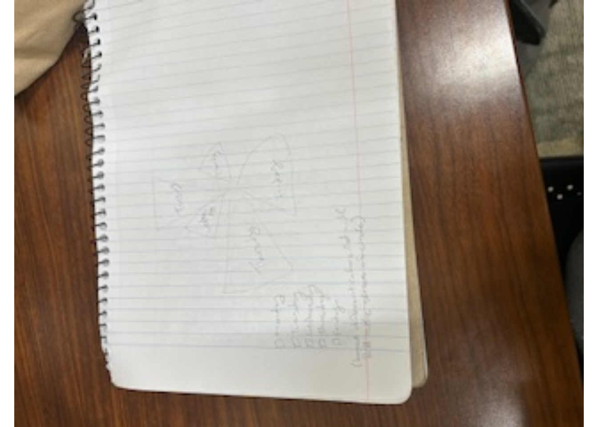

#loading packages
library(tidyverse)
library(janitor)
library(here)
library(flextable)
library(readxl)
library(png)
library(grid)
#loading data
my_data <- read.csv(here("data/my_data.csv"))Homework 3
https://github.com/Hunter-Ross-3/ENVS-193DS_homework-03.git
Problem 1. Personal data
a. Data summarizing
I calculated the Mean amount of money I spent on campus per day of the week. This summary allows me to compare how my spending varies depending on the day because on days that I’m on campus longer I expect to have higher spending.
b.Visualization
#summarizing the mean spending by each day and naming it summary_data
summary_data <- my_data |>
group_by(day) |>
summarise(mean_spent = mean(spent, na.rm = TRUE)) #getting mean of data
#plotting data
ggplot(my_data, aes(x= day, y= spent)) +
#making a jitter plot
geom_jitter(width = 0.2, alpha = 0.6, color = "steelblue") + #adding specific width color and alpha to the jitterplot
stat_summary(fun = mean, geom = "point", size = 4, color= "darkred") +#adding the mean into the jitter plot as the color red
#adding title of graph and axis
labs(
title = "Money Spent on Campus by Day",
x = "Day of the Week",
y = "Money Spent ($)") +
# customizing the theme
theme_minimal(base_size = 4) +
theme(axis.title.x = element_text(size =14)) +
theme(axis.text.x = element_text(size =10)) +
theme(axis.title.y = element_text(size =14)) +
theme(axis.text.y = element_text(size =10)) +
theme(title = element_text(size =14)) 
#changing the text size individually for all titles c. Caption
Figure 1. Each point shows how much money I spent on campus each day. Red dots make the average for each day. I tend to spend more mid-week, especially on Thursday.
d. Table presentation
#creating a flextable
summary_data |> #using the summary data
rename('Day of Week' = day,#renaming day to day of the week
'Mean Spending($)'= mean_spent) |> #renaming mean_spent to mean spending
flextable() |>
autofit() |>
set_caption("Table 1. Average money spent on campus by weekday.") #creating a caption for the tableDay of Week | Mean Spending($) |
|---|---|
Friday | 5.875 |
Monday | 2.875 |
Thursday | 10.985 |
Tuesday | 5.396 |
Wednesday | 10.245 |
Problem 2. Affective visualization
a. Describe in words what an affective visualization could look like for your personal data
An affective visualization of this data could be a “spending spire,” where each day is a ring in a circular calendar. The thickness of the ring would reflect how much i spent. It would also show how spending builds over time and could bring in the emotional data into my daily habits.
b. Sketch
grid.raster(readPNG(here("sketch.png")))
#the only way me and the DREAM lab could figure out how to get an image to actually show upc. Visualization draft
# creating cicle graph
ggplot(my_data, aes(x = day, y = spent, fill = day)) + #using my original data not summary data
geom_bar(stat = "identity", position =
"dodge", show.legend = FALSE) +
#creating a base bar graph
coord_polar() + #changing the bar graph to circle
theme_void() + #theme
scale_fill_viridis_d() +
labs(title = "Spending Spiral: Money Spent by Day") +# title
theme(title = element_text(size =14))# changing the size of titled. Artistic statement
-Content: This represents my daily spending as slices of a circle to visualize both emotional and routine-driven behavior. -Influence: The circle graphs I’ve encountered in my professors’ lectures and various articles have been a major source of inspiration for me. I find them to be an elegant and straightforward way to present information, combining clarity with visual appeal. -Form: I plan to create my final circle graph in R using ggplot and using geom_bar with coord_polar to achieve the smooth circular visualization. I’ll enhance the visual appeal by making sure to choose a nice color scheme, making clear labels, and ensuring an intuitive layout that interpreters the data both engaging and easy to -Process: To make my ruff draft I started my calculating daily averages And then sketched the spiral. I used R coors_polar to test the visual structure and see the default colors.
Problem 3. Statistical critique
a. Revisit and summarize
They did a regression with the plant-pollinator asynchrony against the year. The predictor variable is the indication that species shoe response diversity or differential changes of their asunchrony with apple bloom over time.This allowed them to test whether biodiversity stabilizes synchrony despite climate change.
grid.raster(readPNG(here("Stat_test.png")))grid.raster(readPNG(here("Stat_test_caption.png")))
b. Visual clarity
Figure 3 clearly displays the distribution of bee activity relative to peak apple bloom, using a boxplot format with a reference line for bloom bate. The x-axis groups bees by genus, and the y-axis shows the number of days relative to the bloom, making it easy to compare phonological timing. The visual format effectively communicates which genera are most synchronized.